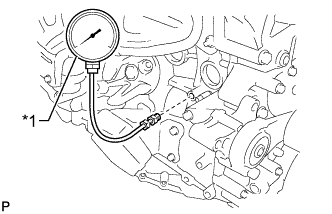

СИСТЕМА СМАЗКИ ДВИГАТЕЛЯ > ПРОВЕРКА БЕЗ СНЯТИЯ С АВТОМОБИЛЯ |
| 1. ПРОВЕРЬТЕ УРОВЕНЬ МОТОРНОГО МАСЛА |
Прогрейте двигатель, затем остановите его и подождите 5 минут.
Убедитесь, что уровень масла находится между отметками низкого и максимального уровней на щупе проверки уровня масла.
Если уровень масла находится на низком уровне, убедитесь в отсутствии утечек моторного масла и долейте масло до максимальной отметки.
| 2. ПРОВЕРЬТЕ КАЧЕСТВО МОТОРНОГО МАСЛА |
Проверьте, нет ли старения масла, наличия в нем воды, обесцвечивания или разжижения. Если в ходе осмотра установлено, что масло имеет низкое качество, замените масло и масляный фильтр (Нажмите здесь).
| 3. ПРОВЕРЬТЕ ДАВЛЕНИЕ МАСЛА |
Снимите контактный датчик давления масла в сборе (Нажмите здесь).
|  |
Установите датчик давления масла.
| *1 | Датчик давления масла |
Прогрейте двигатель.
Измерьте давление масла.
| Условие | Заданные условия |
| Холостой ход | 29 кПа (0,3 кгс/см2, 4,2 фунтов на кв. дюйм) или более |
| 3000 об/мин | 160 - 490 кПа (1,6 - 5,0 кгс/см2, 23 - 71 фунта на кв.дюйм) |
Снимите датчик давления масла.
Установите контактный датчик давления масла в сборе (Нажмите здесь).